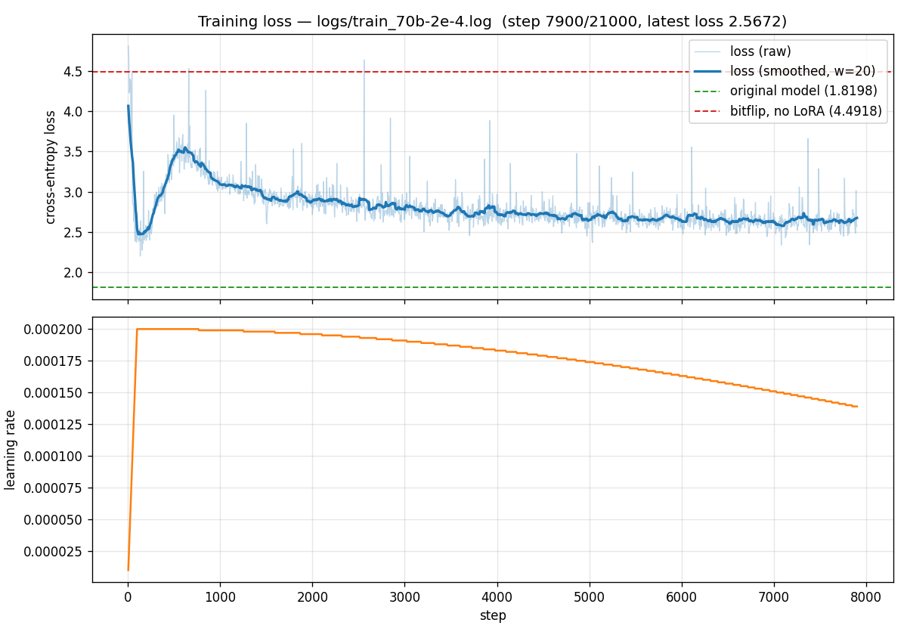

Bitflip-Aware LoRA Fine-Tuning with FSDP2 (Llama-3-70B)#
This tutorial covers bitflip-aware LoRA fine-tuning of Llama-3-70B using
FSDP2 (torch.distributed.fsdp.fully_shard) and torchtitan model
definitions. It scales the approach in Bitflip-Aware LoRA Fine-Tuning from a 7B–8B model
to a 70B model on a small B200 node.
Note
If you have not set up the environment yet, follow Installation first. The FSDP2 path also requires a recent PyTorch nightly — see Step 0 below.
Overview#
The setup is the same as Bitflip-Aware LoRA Fine-Tuning:
Random Bitflip Simulation — random bit flips are injected during the forward pass into both activations and weights of every Linear layer (except
lm_head).Low-Rank Adaptation (LoRA) — small
lora_A/lora_Bmatrices are attached to each Linear; only these are trained, the pretrained weights stay frozen.
The two differences from Bitflip-Aware LoRA Fine-Tuning are:
Model build path — instead of
transformers.AutoModelForCausalLM, the model is built fromtorchtitan’s Llama-3 definitions on ametadevice and then materialised; this is required to fit a 70B model under FSDP2.Sharding — parameters, gradients, and optimizer state are sharded across GPUs with FSDP2 (
fully_shard), with bf16 forward and fp32 reductions.
How It Works#
Each nn.Linear is replaced by a BitFlipLinearLora whose forward computes
where \(X\) is the input activation, \(W\) is the frozen pretrained weight, \(A\) / \(B\) are the trainable low-rank matrices, \(\text{scaling} = \text{lora\_alpha} / r\), and \(\text{bitflip}(\cdot)\) applies random bit flips with configurable per-component probabilities.
The transform is applied by BitFlipLoRAConverter (from
aixsim_models.bitflip.lora_finetune_fsdp.converter), which replaces all
nn.Linear modules (excluding output / lm_head) with
BitFlipLinearLora after the meta model is constructed and before FSDP2
sharding.
Entry Points#
File |
Description |
|---|---|
Standalone training script (torchrun + FSDP2, no HF Trainer / Accelerate). |
|
Forward-only eval (clean / |
|
70B training + bitflip + LoRA configuration. |
|
Single-/multi-node |
Step-by-Step Guide#
Step 0 — Environment#
FSDP2 (fully_shard) requires a recent PyTorch. This experiment carries
its own torchtitan submodule pinned to commit 0e0590c1 at
experiments/llm-bitflip/lora_finetune_fsdp/torchtitan/, so it does
not share the project’s submodules/torchtitan pin (which is held
back for the existing pretrain experiments). Initialise it and create the
venv with:
git submodule update --init experiments/llm-bitflip/lora_finetune_fsdp/torchtitan
cd experiments/llm-bitflip/lora_finetune_fsdp
bash setup_env.sh
source .venv/bin/activate
setup_env.sh uses uv (the same tool used by
the parent project) to create .venv pinned to Python 3.11, which is
required because train.py / eval.py use the stdlib tomllib module
(3.11+). Install uv first if you don’t have it
(curl -LsSf https://astral.sh/uv/install.sh | sh); override the interpreter
with PYTHON_VERSION=3.12 bash setup_env.sh if needed.
Note
train.py / eval.py add the repo’s src/ and the experiment’s
torchtitan/ submodule to sys.path at import time, so the project
does not need to be installed (pip install -e . not required).
Just make sure PyTorch, Triton, and the other dependencies from
setup_env.sh are available in the active environment.
Step 1 — Configure Bitflip, LoRA, and Training#
The 70B run is fully configured by a single TOML file
(config_70b.toml):
[model]
flavor = "70B"
hf_model_path = "meta-llama/Meta-Llama-3-70B"
[training]
dtype = "bfloat16"
mixed_precision_param = "bfloat16"
mixed_precision_reduce = "float32"
seq_len = 2048
local_batch_size = 2
gradient_accumulation_steps = 4
steps = 20 # override with --steps for full run
lr = 2e-4
weight_decay = 0.01
warmup_steps = 100
max_norm = 1.0
log_freq = 5
save_freq = 500
[parallelism]
fsdp_degree = 4
[lora]
r = 32
lora_alpha = 32
[bitflip]
w_p_exp = 1.52587890625e-05 # 0.5^16
w_p_frac = 1.52587890625e-05 # 0.5^16
w_zero_out_t = 256.0 # > profiled |w| max (126.5)
x_p_exp = 1.52587890625e-05 # 0.5^16
x_p_frac = 1.52587890625e-05 # 0.5^16
x_zero_out_t = 8192.0 # > profiled |x| max (3680)
base_seed = 0
skip_patterns = ["output"] # lm_head is not perturbed
Section |
Parameter |
Description |
|---|---|---|
|
|
FSDP2 shard size. |
|
|
bf16 parameters, fp32 gradient reductions — the standard FSDP2 large-model recipe. |
|
|
LoRA rank and scaling (effective scaling = |
|
|
Thresholds above which a value is set to 0 after the flip — a guard against exponent-flip blowups. See Step 2 below. |
|
|
Layer-name substrings to leave un-bitflipped. |
Note
Bitflip probabilities must be a power of 0.5 (e.g., 0.5^16 ≈ 1.526e-5);
the Triton kernel snaps to the nearest valid value. See Mase-Triton.
Step 2 — Profile and Set zero_out Thresholds#
zero_out thresholds must sit above the clean model’s legitimate range
so that the clip catches only flip-corrupted blowups, never real signal.
Profile with eval.py --profile over a few dozen sequences:
torchrun --nproc_per_node=4 eval.py --config config_70b.toml \
--num-samples 64 --profile
For Llama-3-70B (64 sequences, 131k tokens, 560 bitflip-eligible Linear layers) the profile is:
Tensor |
p50 |
p99 |
p99.9 |
p99.99 |
global max |
|---|---|---|---|---|---|
Activations (Linear inputs) |
0.031 |
0.5 |
2 |
4 |
3680 |
Weights ( |
0.016 |
0.063 |
0.063 |
0.125 |
126.5 |
A few late-layer w2 inputs carry huge values (the “massive activations”
seen in Llama-3) — these are legitimate, so the activation threshold must sit
above 3680. The 70B config uses w_zero_out_t = 256.0 and
x_zero_out_t = 8192.0.
Warning
An earlier config used w_zero_out_t = 1.25 and x_zero_out_t = 30.
The profile showed these clip legitimate values, and a test run confirmed it:
training loss exploded to 9.72 by step 5 (perplexity ~16,000) before any
flip occurred. Always profile before changing thresholds.
Step 3 — Launch Training#
The full 70B run targets ~21,000 optimizer steps (≈ 1% of 70B parameters in training tokens, ≈ 700M tokens):
cd experiments/llm-bitflip/lora_finetune_fsdp
bash run.sh config_70b.toml
which expands to (single 4-GPU node):
torchrun --nproc_per_node=4 --nnodes=1 \
--master_addr=localhost --master_port=29500 \
train.py --config config_70b.toml
Note
--nproc_per_node must equal [parallelism].fsdp_degree in the config
(4). FSDP2 builds a 1-D device mesh of that size and init_device_mesh
requires the mesh to span exactly WORLD_SIZE ranks, so a mismatch aborts
at startup. run.sh defaults to NPROC_PER_NODE=4 to match; to use a
different GPU count, change both together.
To override the step count from the command line:
torchrun --nproc_per_node=4 train.py --config config_70b.toml --steps 21000
For multi-node, set MASTER_ADDR / NNODES / NODE_RANK env vars per
run.sh usage notes.
Step 4 — Evaluate#
eval.py is forward-only and supports three modes:
# Clean baseline (no bitflip, no LoRA)
torchrun --nproc_per_node=4 eval.py --config config_70b.toml --num-samples 256
# Bitflip ON, r=0 (no LoRA), no retraining
torchrun --nproc_per_node=4 eval.py --config config_70b.toml --num-samples 256 --bitflip
# Profile activations + weights to choose zero-out thresholds
torchrun --nproc_per_node=4 eval.py --config config_70b.toml --num-samples 64 --profile
Evaluation is the first N sequences of the training set, seq_len = 2048
chunks, token-weighted mean cross-entropy; perplexity = exp(loss).
Results#
All numbers below are for meta-llama/Meta-Llama-3-70B (70B, bf16) on
4 × NVIDIA B200 with fsdp_degree = 4, training data
Cheng98/fineweb-edu-1.25B.
Baseline — Clean Model#
Original model, no bitflip, no LoRA (logs/eval_baseline.log):
Sequences |
Tokens |
Loss (CE) |
Perplexity |
|---|---|---|---|
256 |
524,288 |
1.8198 |
6.17 |
Bitflip On, No LoRA, No Retraining#
Same 256 sequences, r = 0, seed 0, all 560 eligible Linear layers
perturbed (logs/eval_bitflip.log):
Condition |
Loss (CE) |
Perplexity |
|---|---|---|
Clean (reference) |
1.8198 |
6.17 |
Bitflip — exp + frac, on weights & activations ( |
4.4918 |
89.28 |
Observations: Adding exponent-bit flips and activation flips degrades perplexity from 6.17 → 89.28 (~14×). The degradation is large but coherent — far from the ~16,000 of the bad-threshold run — so there is meaningful headroom for LoRA to recover.
Bitflip-Aware LoRA Retraining (lr = 2e-4)#
Training was run with r = 32, lora_alpha = 32, lr = 2e-4,
warmup = 100, weight_decay = 0.01, seq_len = 2048,
local_batch_size = 2, grad_accum = 4 (effective batch = 32
sequences). The original step budget was 21,000; training was stopped
early at 7,900 steps once the loss had clearly converged — the run had
already demonstrated that bitflip-aware LoRA scales to 70B with the same
recipe used for 8B, so the remaining budget was not needed
(logs/train_70b.log).
{kind=link}

Training loss for the 70B run at lr = 2e-4 (early-stopped at 7,900
steps after convergence).#
Metric |
Value |
|---|---|
Training steps completed |
7,900 (early-stopped; original target 21,000) |
Final training loss |
~2.5 – 2.7 (converged) |
Tokens/s |
~1,095 |
The headline result: with bitflip noise injected into every eligible Linear
layer, training loss converges from the bitflip-only ceiling
(CE ≈ 4.49 / PPL ≈ 89.28) down to ~2.5 – 2.7. The bitflip-aware LoRA recipe
transfers cleanly from 8B to 70B without changes to the kernel, converter,
or optimizer setup. Scaling up this experiment, e.g., a higher lora rank r with more fine-tuning steps or full fine-tuning with bitflip, is very likely to further recover the model performance.
Note
This is the only learning rate kept in this tutorial; other learning rates
(1e-4, 1e-5) explored during sweeps are omitted.
Resources#
Training log:
experiments/llm-bitflip/lora_finetune_fsdp/logs/train_70b.logTraining curve:
experiments/llm-bitflip/lora_finetune_fsdp/logs/train_70b_loss.pngBaseline / bitflip eval logs:
logs/eval_baseline.log,logs/eval_bitflip.log,logs/profile.logTraining config: config_70b.toml